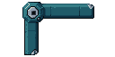
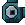
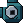
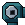
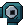
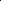
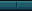
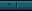

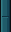

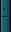
New teal masonry surround, four separate corners and centered silver joints. The existing 8×8 cells, approved upper scene, portrait and lower HUD are unchanged. Review candidate · no production integration or merge.
Full report · Exact QA results · Native manifest · PixelLab lineage
Default: 360×640 camera captures displayed at actual 1× screen size. The before view has the same locked cells with the new frame hidden. These are static art-only renders with unchanged character contrast sprites, not playable-zone integration.
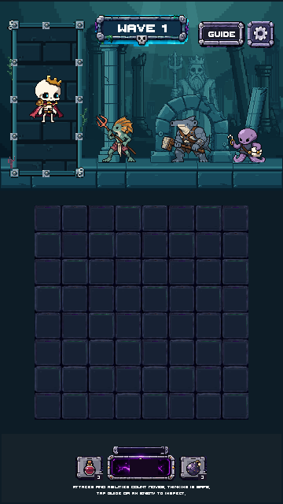
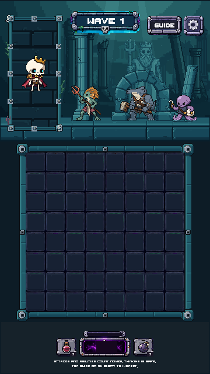
Combined 720×1280 comparison · Accepted Stage04 before capture · Isolated Unity frame / overlap
One PixelLab source, exact native edits and modular derivatives. No resampling. The silver socket stays readable; bright stone bevels are subdued.
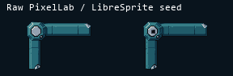
Nearest-neighbor 3× source comparison
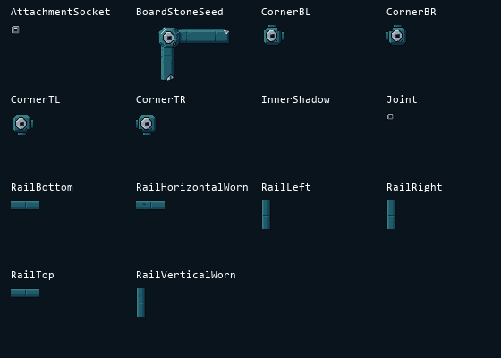
2× inspection · Native assembled seam proof · 3× frame inspection










Reference crop below is composition/material inspiration, not extracted runtime art. Stage05 covers the frame only; side ruins and anchored growth remain for the next stage.
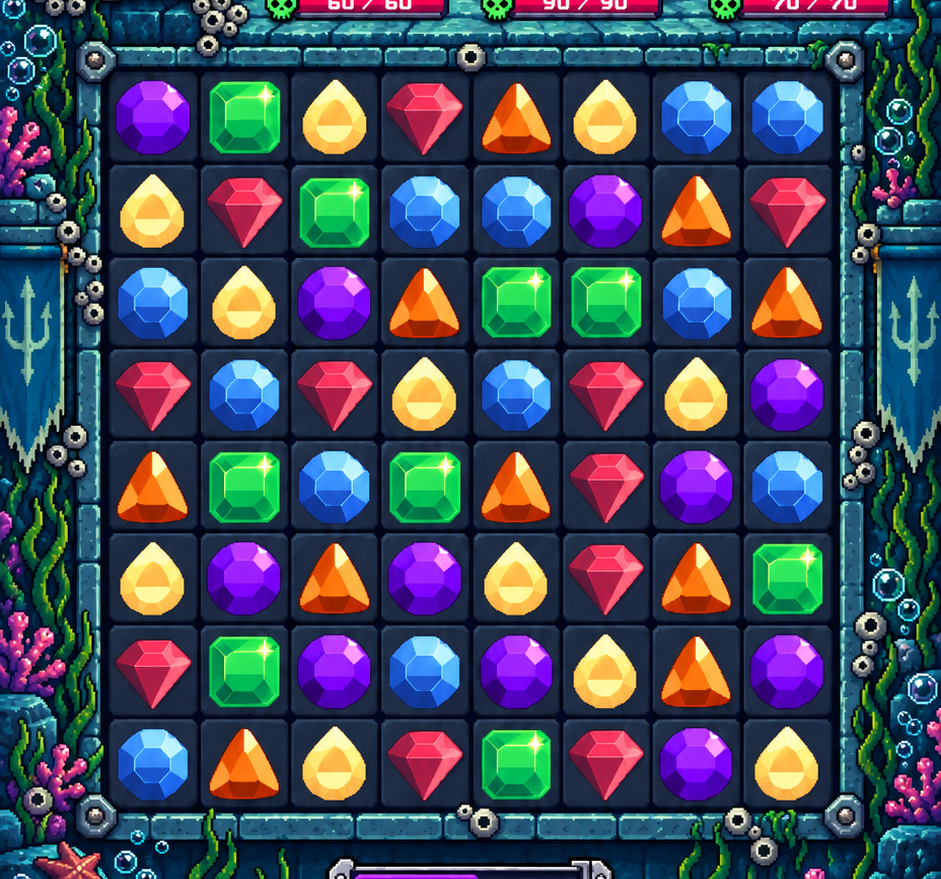
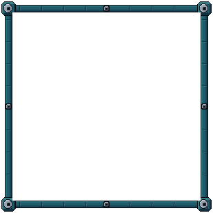
| Check | Result |
|---|---|
| Unity compilation/validation | PASS · 6000.3.19f1 |
| LibreSprite exact roundtrips | 14 / 14 |
| Native seam pairs | 26 / 26 |
| Six sizes: unchanged cell pixels | 2,082,448 compared |
| Visible inner-edge coverage | 13,088 samples · no gaps |
| Upper scene and lower UI | Exact pixel preservation |
| Accepted / protected files | 435 / 7,839 unchanged |
| Palette / alpha | 11 opaque colors across family · binary |
| PixelLab | 6 spent · 584.20 remaining · 58 cumulative |
Scope limit: the pre-existing fractional mapping of the current 45/46×46 cell sources is preserved. Only the new frame's uniform native scale is verified here. No live combat, device build, safe-area or AIR/flood behavior test is claimed.
Artistic judgment: 8/10 for this structural frame stage (subjective). Stage06 has not started. Waiting for your review.